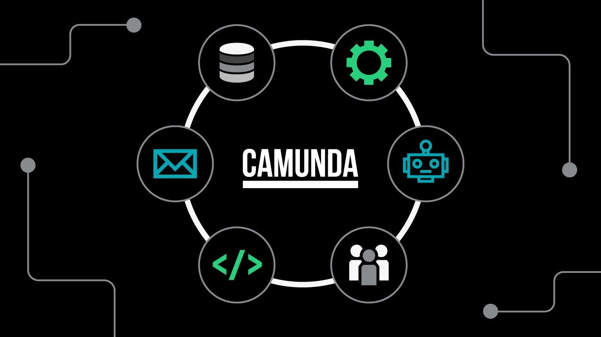

Mục tiêu: Hiểu Camunda là gì và vì sao điều phối quy trình (orchestration) đáng để đầu tư một engine riêng, trước khi đi vào chi tiết kiến trúc Camunda 8 ở bài tiếp theo.
Camunda là gì, và vì sao cần điều phối quy trình
Camunda là nền tảng điều phối và tự động hóa quy trình. Nói theo kiểu code: có một quy trình nghiệp vụ nhiều bước, nhiều hệ thống tham gia (duyệt vay, xử lý đơn hàng, onboarding...) — thay vì viết logic điều phối rải rác bằng tay trong service này gọi service kia, bạn mô hình hóa quy trình bằng BPMN rồi để engine (Zeebe) chạy nó, quản lý luôn trạng thái, thứ tự, và các trường hợp lỗi. Rule nghiệp vụ (ví dụ "đơn dưới 500tr thì auto-approve") tách riêng ra bằng DMN, để business chỉnh được mà không cần deploy lại app.
Lý do cần điều phối: càng nhiều hệ thống tham gia một quy trình, chi phí giữ chúng ăn khớp tăng phi tuyến, không tuyến tính. Hai service gọi nhau thì dễ debug. Sáu bảy service cùng tham gia một luồng (thanh toán, kho, thông báo, gian lận...) mà không ai giữ bức tranh tổng thể — lỗi giữa luồng gần như không trace được. Điều phối giải quyết đúng việc đó: một chỗ duy nhất biết toàn bộ quy trình đang chạy tới đâu.
BOAT — bối cảnh ngành Camunda đang đặt cược vào
Gartner năm 2024 đặt tên cho một dịch chuyển trong ngành tự động hóa: BOAT — Business Orchestration and Automation Technologies. Ba giai đoạn:
- BPM truyền thống — vẽ sơ đồ + form nội bộ, ít đụng hệ thống thật.
- RPA — bot xử lý một tác vụ lặp lại, không có khái niệm "toàn bộ quy trình".
- BOAT — điều phối từ đầu đến cuối, nối các tác vụ đơn lẻ thành một luồng có trạng thái, retry/compensate được khi một bước fail giữa chừng.
Thuật ngữ nghe marketing, nhưng cái nó chỉ ra thì thật: hầu hết công cụ tự động hóa xử lý tác vụ riêng lẻ, rất ít công cụ xử lý được toàn bộ quy trình có trạng thái. Đó là khoảng trống Zeebe nhắm tới.
Góc nhìn kỹ thuật — vì sao cần một engine riêng
Nhiệm vụ đơn lẻ khác quy trình đầu-cuối ở đâu
Ví dụ: quy trình duyệt vay thế chấp — xác minh danh tính, kiểm tra tín dụng, đánh giá rủi ro, một vài bước duyệt thủ công, một số bước chạy song song, kéo dài vài ngày. Nếu implement bằng cách gọi API tuần tự trong code, ba vấn đề thật sự phát sinh:
- State nằm ở đâu? Quy trình kéo dài vài ngày — không thể giữ trong memory, phải persist đúng chỗ.
- Resume khi fail giữa chừng? "Kiểm tra tín dụng" fail sau khi "xác minh danh tính" đã xong — ai biết đã chạy tới đâu để resume đúng, không chạy lại từ đầu hay bỏ sót bước.
- Đồng bộ các bước song song để ra quyết định cuối — dễ chạy song song bằng tay, khó đồng bộ đúng.
Đây là lý do orchestration engine tồn tại như hạ tầng riêng, không phải một helper library — nó giải đúng ba vấn đề trên bằng cách externalize state ra khỏi code nghiệp vụ.
Tích hợp mở — không khóa vào một ngôn ngữ lập trình
BPMN/DMN là chuẩn mở, không phải thứ Camunda tự chế riêng — nghĩa là sơ đồ bạn vẽ ra chính là thứ chạy thật ("what you see is what you run"), không phải một spec rồi dev tự diễn giải lại thành code. BA/PM vẽ BPMN, dev viết worker implement từng task — cả hai nhìn cùng một model, không lệch nhau giữa "spec trên giấy" và "code thật đang chạy".
Camunda expose ra ngoài qua gRPC/REST với client library cho nhiều ngôn ngữ (Java, Node, Go, Python...), nên không bị khóa cứng vào JVM. Series này chọn Java + Spring Boot vì đó là stack quen tay, không phải vì Camunda ép buộc.
Rào cản thực tế, và vì sao mình chọn Self-managed
Rào cản tự động hóa — vì sao dự án hay bị chặn giữa chừng
Đọc tới đoạn này trong tài liệu gốc mình thấy đúng với thực tế hay gặp hơn là phần định vị sản phẩm:
- Hệ thống cũ (legacy) — không expose API/hook nào để orchestration engine gọi vào, tích hợp tốn công hơn hẳn so với build mới từ đầu.
- Công cụ rời rạc giữa các team — mỗi team dùng một tool tự động hóa riêng (RPA riêng, workflow riêng), không ai giữ view tổng thể của quy trình xuyên team.
- Yêu cầu tuân thủ/bảo mật — giới hạn dữ liệu nhạy cảm được phép chạy qua đâu, ngay dưới đây là lý do nó dẫn tới lựa chọn Self-managed.
Vì sao củng cố hướng Self-managed
Điều phối "toàn bộ quy trình" nghĩa là dữ liệu quy trình — thông tin khách hàng, quyết định tín dụng — chạy qua engine đó. Cần kiểm soát dữ liệu chặt (compliance, on-premise) thì tự quản lý hạ tầng orchestration hợp lý hơn giao cho SaaS bên ngoài — đó là lý do series này đi theo Self-managed.
Quan điểm cá nhân
Tài liệu BOAT gốc thiên về định vị sản phẩm (đúng vì xuất phát từ Gartner + Camunda marketing), nhưng điều mình rút ra và thấy áp dụng thật khi ngồi code lại đơn giản hơn nhiều: đừng tự chế state machine bằng tay cho quy trình nhiều bước, nhiều ngày, nhiều hệ thống. Mình từng viết kha khá code kiểu đó — vài cột trạng thái trong DB, vài cron dò để "resume", không ai nhìn ra quy trình đang chạy tới đâu. Đúng là nỗi đau orchestration engine sinh ra để giải quyết.
Phần "trí tuệ nhúng"/AI orchestration trong tài liệu gốc mình dè dặt hơn — đúng xu hướng nhưng chưa kiểm chứng trong series này, tạm gác lại, tập trung nền tảng (BPMN, worker, state) trước.
Tóm tắt
- Camunda = điều phối quy trình đầu-cuối bằng BPMN/DMN, không chỉ tự động hóa từng tác vụ
- Orchestration cần thiết vì chi phí giữ nhiều hệ thống ăn khớp tăng phi tuyến theo số service tham gia
- BOAT (Gartner, 2024) = dịch chuyển từ RPA (tác vụ đơn lẻ) sang điều phối toàn bộ quy trình
- Vấn đề kỹ thuật thật: state của quy trình dài hơi nằm ở đâu, resume khi fail thế nào, đồng bộ bước song song ra sao
- BPMN/DMN là chuẩn mở, "what you see is what you run", không khóa vào một ngôn ngữ lập trình
- Rào cản tự động hóa thực tế: hệ thống cũ, công cụ rời rạc giữa team, yêu cầu tuân thủ/bảo mật
- Dữ liệu quy trình nhạy cảm chạy qua engine → thêm lý do chọn Self-managed